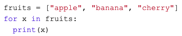

Computergestütztes Experimentieren
Teil 2: Programmieren mit PsychoPy 😎
Lucca Zachmann
Webinar via Zoom, Universität Fribourg
27. März 2020
Physically distant, socially connected
Administratives
Join the fun 📱
Mit Code 18 92 56 über: https://www.menti.com
Direkt: https://www.menti.com/hcr7zidapk
Seminar Struktur
- Teil: Online Fragebögen ✔️
- Teil: Programmieren mit PsychoPy (live!)
- Teil: Datenauswertungen (3. und 24. April)
Direction of travel
Reiseplan
| Block | Zeit | Station |
|---|---|---|
| 1 | 9.15–10.00 | Admin/Einführung, Installation, Experimentelles Design |
| 10.00–10.15 | ☕ | |
| 2 | 10.15–12.00 | Python Basics, Demonstration |
| 12.00–13.00 | ğŸ | |
| 3 | 13.00–17.00 | Individueller Workshop |
Webinar Ablauf
- Vormittag: Tutorial, dringende Fragen im Zoom-Chat oder Menti stellen.
- Bitte Kamera und Mikrofon ausschalten, ausser du sagst was 😉
- Nachmittag: Individuelles Arbeiten/Ausprobieren, jede Menge Zeit individuelle Fragen zu beantworten
Leistungsüberprüfung
Datenabgabe (individuell)
Erweiterung des Skripts (Kleingruppen von 2 bis 4 Personen)
-> Siehe 07 Leistungsüberprüfung auf Moodle
Let’s get started
Installation
Open-source software
«Standing on the shoulders of giants.»
- Kollaboration
- Teilen und wiederverwenden
- Hilfreiche Gemeinschaft
🍀
Installation/Einrichtung von Software ist oft schwieriger und schlechter dokumentiert als blosse Verwendung.
Aufgabe für die Windows Benutzer
Auf was musst du beim experimentellen Design achten?
-> Schreibe deine Punkte stichwortartig auf ğŸ“
macOS Catalina I
Lade den 64-bit Command-line Installer für Python 3.7 herunter:
https://repo.anaconda.com/archive/Anaconda3-2019.10-MacOSX-x86_64.sh
- Öffne den Terminal (CMD + Space).
Kopiere folgendes in den Terminal und drücke ENTER:
bash ~/Downloads/Anaconda3-2019.10-MacOSX-x86_64.sh
macOS Catalina II
- Folge der Installation.
- âš ï¸ WICHTIG: Auf die Frage ‘Do you wish the installer to initialize Anaconda3 by running conda init?’ sagen wir no!
Aktiviere Anaconda:
source /Users/<Dein Benutzername>/anaconda3/bin/activate(Bemerke: Dein Benutzername kannst du mit
whoamierfragen)
macOS Catalina III
Wir initialisieren die Änderung mit:
conda init zshSchliesse den Terminal. Öffnen ihn aber erneut und teste die Installation:
conda listSiehst du eine Liste der Module? ✨
Aufgabe für macOS Benutzer
Brainstorming: Was für Experimentideen kommen dir spontan in den Sinn?
-> Schreibe deine Ideen stichwortartig auf ğŸ“
Windows 10
Lade den 64-bit graphical installer for Python 3.7 für Windows herunter:
https://repo.anaconda.com/archive/Anaconda3-2019.10-Windows-x86_64.exe
Führe das heruntergeladene File aus um den Installationsprozess zu starten.
âš ï¸ WICHTIG: Unter Advanced Options markiere das Kästchen ‘Add Anaconda to my PATH environment variable’.
Öffne einen Anaconda Terminal und teste die Installation mit:
conda list
Packages/modules (PsychoPy, etc.)
Python Package Index (PyPI): “Cheese Shop”
Via Terminal (macOS):
/Users/<Username>/anaconda3/bin/python -m pip install <package name>Via Anaconda Promt (win10):
pip install <package name>Anaconda Distribution:
conda install <package name>
Last step ğŸ“
Öffne Spyder (Editor, Entwicklungsumgebung (IDE))
Im Terminal (macOS) oder Anaconda Promt (win10):
spyderÜber den Anaconda Navigator: Launch Spyder
Experiment Design
Computergestütztes Experimentieren
Pros
- Komplexe und dynamische Aufgabenstrukturen
- Präzise Messung und Kontrolle von Variablen
- Automatisierung
Cons
- Unnatürlichkeit
- Abstraktion
- Schwierig zu standartisieren
#Source: Merrie Brucks, Computer-Controlled Experimentation in Consumer Decision Making and Judgment; in Advances in Consumer Research Volume 17(1990)
Auf was musst du beim experimentellen Design achten? 📱
Notiere deine Stichworte auf Menti. ğŸ“
Mit Code 62 55 20 via https://www.menti.com
Direkt: https://www.menti.com/y9o8nnqyzt
Experimentelles Design
- Orientierung/Information des Teilnehmenden
- Datenschutz
- (Versteckte) Hypothesen
- Messung der relevanten Variablen, Neutralität
- Benutzerfreundlichkeit
- Dauer, Klarheit, Komfort (Tasten)
- Sweets ğŸ
- Erlebnis, Performance Feedback
Habt ihr Fragen oder Mitteilungen? 📱
15’          Â
Python Basics ğŸ
Python ist eine objekt-orientierte general-purpose Programmiersprache.
Syntax: Datentypen
| Name | Verwendung | Typ | Beispiel |
|---|---|---|---|
| String | Text | str | “Hi!†|
| Integer, Float | Zahlen | int, float | 20, 4.5 |
| List | Listen (ordered, mutable) | list | [“Good”, “Morning”, “Everybody”] |
| Boolean | Wahrheitswerte | bool | True, False |
| ⋮ | ⋮ | ⋮ | ⋮ |
| Tuple | Listen (ordered, inmutable) | tuple | (1, 2) |
| Dictionary | Listen (unordered, mutable) | dict | {“a”:1, “b”: 2, “c”: 3} |
Syntax: Datentyp Konversionen
- Ask for datatype:
type() - Any data type to integer:
int() - Integer to string:
str() - etc.
Syntax: Variablen
- Variablen kreieren:
x = 'On our way'y = 2z = "PsychoPy!"
- Variablen kombinieren:
str_combo = x + y + zint_combo = y + y
Syntax: = / ==
- Weise einer Variable einen Wert zu -> =
x = 1
- Überprüfe, ob zwei Ausdrücke den gleichen Wert ergeben -> ==
1 == 2- ->
False
Syntax: Kommentieren
Zu oft unterschätzt‼️
- Single line:
- # Single line comment
- Multiple lines:
- """ [Comment
- over
- multiple
- lines] """
Alles klar soweit? Gibt es Unklarheiten? 📱
Stelle deine Frage auf Menti.
Mit Code 46 17 32 über https://www.menti.com
Direkt: https://www.menti.com/x3rxatwnng
Syntax: Funktionen und Argumente
Funktionen müssen installiert sein (via Terminal oder Anaconda Promt)
- Funktionen:
import graph_tool😡import randomimport pandas as pddf = pd.DataFrame()
from psychopy import visualwin = visual.Window()
- Argumente:
win = visual.Window(size = [600,600],color = [-1,-1,-1],units = 'pix')
Syntax: Einschlag
- Indentation matters!
- Darstellung von Code Blöcken (z.B Loops, if statements, etc.)
- Mind. 1 Einzug und homogen innerhalb des Blocks

Syntax: Iterations und conditionals
Loops

if statements

Syntax: Methoden
- Wir verwenden Methoden auf Objekte
msg = []msg.append('Corona, go away!')
Quiz 📱
Mit Code 46 17 32 über https://www.menti.com
Direkt: https://www.menti.com/x3rxatwnng
Nützliche Links
Learning by doing, doing by googling
Demonstration
- Folge der Demonstration auf meinem Bildschirm.
- Oder versuche direkt in Spyder mitzumachen.
Workshop
Aufgaben
Alleine: Gehe selbständig durchs Skript und vergewissere dich, dass du verstehst was das Skript macht.
Stelle deine Fragen per Troubleshooting Forum auf Moodle, per E-Mail oder Anruf.
Als Gruppe: Koordiniert in der Gruppe (Anruf oder E-Mail) wie und was ihr bei der Erweiterung des Skripts vornehmen wollt. Unterstützt euch gegenseitig.